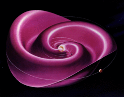

Sunspot
- Top: active region 2192 in 2014 containing the largest sunspot of solar cycle 24[1] and active region 1302 in September 2011.
- Bottom: sunspot close-up in the visible spectrum and a large group of sunspots stretching about 320,000 km (200,000 mi) across.
| Part of a series of articles about |
| Heliophysics |
|---|
|  |
Sunspots are temporary spots on the Sun's surface that are darker than the surrounding area. They are regions of reduced surface temperature caused by concentrations of magnetic flux that inhibit convection. Sunspots appear within active regions, usually in pairs of opposite magnetic polarity.[2] Their number varies according to the approximately 11-year solar cycle.
Individual sunspots or groups of sunspots may last anywhere from a few days to a few months, but eventually decay. Sunspots expand and contract as they move across the surface of the Sun, with diameters ranging from 16 km (10 mi)[3] to 160,000 km (100,000 mi).[4] Larger sunspots can be visible from Earth without the aid of a telescope.[5] They may travel at relative speeds, or proper motions, of a few hundred meters per second when they first emerge.
Indicating intense magnetic activity, sunspots accompany other active region phenomena such as coronal loops, prominences, and reconnection events. Most solar flares and coronal mass ejections originate in these magnetically active regions around visible sunspot groupings. Similar phenomena indirectly observed on stars other than the Sun are commonly called starspots, and both light and dark spots have been measured.[6]
History
The earliest record of sunspots is found in the Chinese I Ching, completed before 800 BC. The text describes that a dou and mei were observed in the sun, where both words refer to a small obscuration.[7] The earliest record of a deliberate sunspot observation also comes from China, and dates to 364 BC, based on comments by astronomer Gan De (甘德) in a star catalogue.[8] By 28 BC, Chinese astronomers were regularly recording sunspot observations in official imperial records.[9]
The first clear mention of a sunspot in Western literature is circa 300 BC, by ancient Greek scholar Theophrastus, student of Plato and Aristotle and successor to the latter.[10]
The earliest known drawings of sunspots were made by English monk John of Worcester in December 1128.[11][12]
Sunspots were first observed telescopically in December 1610 by English astronomer Thomas Harriot.[13] His observations were recorded in his notebooks and were followed in March 1611 by observations and reports by Frisian astronomers Johannes and David Fabricius.[14][15] After Johannes Fabricius' death at the age of 29, his reports remained obscure and were overshadowed by the independent discoveries of and publications about sunspots by Christoph Scheiner and Galileo Galilei.[16] Galileo likely began telescopic sunspot observations around the same time as Harriot; however, Galileo's records did not start until 1612.[17] During the next decades numerous astronomers of that era participated in the pursuit of sunspots. One of these was the famous astronomer Johannes Hevelius who recorded 19 sunspot groups during the period of the early Maunder Minimum (1653-1679) in the book Machina Coelestis.[18]
In the early 19th century, William Herschel was one of the first to hypothesize a connection of sunspots with temperatures on Earth and believed that certain features of sunspots would indicate increased heating on Earth.[19] During his recognition of solar behavior and hypothesized solar structure, he inadvertently picked up the relative absence of sunspots from July 1795 to January 1800 and was perhaps the first to construct a past record of observed or missing sunspots. From this he found that the absence of sunspots coincided with high wheat prices in England. The president of the Royal Society commented that the upward trend in wheat prices was due to monetary inflation.[20] Years later scientists such as Richard Carrington in 1865 and John Henry Poynting in 1884 tried and failed to find a connection between wheat prices and sunspots, and modern analysis finds that there is no statistically significant correlation between wheat prices and sunspot numbers.[21]
Physics
Morphology
Sunspots have two main structures: a central umbra and a surrounding penumbra. The umbra is the darkest region of a sunspot and is where the magnetic field is strongest and approximately vertical, or normal, to the Sun's surface, or photosphere. The umbra may be surrounded completely or only partially by a brighter region known as the penumbra.[23] The penumbra is composed of radially elongated structures known as penumbral filaments and has a more inclined magnetic field than the umbra.[24] Within sunspot groups, multiple umbrae may be surrounded by a single, continuous penumbra.[25]
The temperature of the umbra is roughly 3000–4500 K, in contrast to the surrounding material at about 5780 K, leaving sunspots clearly visible as dark spots. This is because the luminance of a heated black body (closely approximated by the photosphere) at these temperatures varies greatly with temperature. Isolated from the surrounding photosphere, a single sunspot would shine brighter than the full moon, with a crimson-orange color.[26]
In some forming and decaying sunspots, relatively narrow regions of bright material appear penetrating into or completely dividing an umbra. These formations, referred to as light bridges, have been found to have a weaker, more tilted magnetic field compared to the umbra at the same height in the photosphere. Higher in the photosphere, the light bridge magnetic field merges and becomes comparable to that of the umbra. Gas pressure in light bridges has also been found to dominate over magnetic pressure, and convective motions have been detected.[22]
The Wilson effect implies that sunspots are depressions on the Sun's surface.[27]
Lifecycle
The appearance of an individual sunspot may last anywhere from a few days to a few months, though groups of sunspots and their associated active regions tend to last weeks or months. Sunspots expand and contract as they move across the surface of the Sun, with diameters ranging from 16 km (10 mi)[3] to 160,000 km (100,000 mi).[4]
Formation
Although the details of sunspot formation are still a matter of ongoing research, it is widely understood that they are the visible manifestations of magnetic flux tubes in the Sun's convective zone projecting through the photosphere within active regions.[28] Their characteristic darkening occurs due to this strong magnetic field inhibiting convection in the photosphere. As a result, the energy flux from the Sun's interior decreases, and with it, surface temperature, causing the surface area through which the magnetic field passes to look dark against the bright background of photospheric granules.[29]
Sunspots initially appear in the photosphere as small darkened spots lacking a penumbra. These structures are known as solar pores.[30] Over time, these pores increase in size and move towards one another. When a pore gets large enough, typically around 3,500 km (2,000 mi) in diameter, a penumbra will begin to form.[28]
Decay
Magnetic pressure should tend to remove field concentrations, causing the sunspots to disperse, but sunspot lifetimes are measured in days to weeks. In 2001, observations from the Solar and Heliospheric Observatory (SOHO) using sound waves traveling below the photosphere (local helioseismology) were used to develop a three-dimensional image of the internal structure below sunspots; these observations show that a powerful downdraft lies beneath each sunspot, forms a rotating vortex that sustains the concentrated magnetic field.[31]
Solar cycle
Solar cycles last typically about eleven years, varying from just under 10 to just over 12 years. Over the solar cycle, sunspot populations increase quickly and then decrease more slowly. The point of highest sunspot activity during a cycle is known as solar maximum, and the point of lowest activity as solar minimum. This period is also observed in most other solar activity and is linked to a variation in the solar magnetic field that changes polarity with this period.[32]
Early in the cycle, sunspots appear at higher latitudes and then move towards the equator as the cycle approaches maximum, following Spörer's law. Spots from two sequential cycles co-exist for several years during the years near solar minimum. Spots from sequential cycles can be distinguished by direction of their magnetic field and their latitude.[33]
The Wolf number sunspot index counts the average number of sunspots and groups of sunspots during specific intervals. The 11-year solar cycles are numbered sequentially, starting with the observations made in the 1750s.[34]
George Ellery Hale first linked magnetic fields and sunspots in 1908.[35] Hale suggested that the sunspot cycle period is 22 years, covering two periods of increased and decreased sunspot numbers, accompanied by polar reversals of the solar magnetic dipole field. Horace W. Babcock later proposed a qualitative model for the dynamics of the solar outer layers. The Babcock Model explains that magnetic fields cause the behavior described by Spörer's law, as well as other effects, which are twisted by the Sun's rotation.[36]
Longer-period trends
Sunspot numbers also change over long periods. For example, during the period known as the modern maximum from 1900 to 1958 the solar maxima trend of sunspot count was upwards; for the following 60 years the trend was mostly downwards.[37] Overall, the Sun was last as active as the modern maximum over 8,000 years ago.[38]
Sunspot number is correlated with the intensity of solar radiation over the period since 1979, when satellite measurements became available. The variation caused by the sunspot cycle to solar output is on the order of 0.1% of the solar constant (a peak-to-trough range of 1.3 W·m−2 compared with 1366 W·m−2 for the average solar constant).[39][40]
Modern observation
Sunspots are observed with land-based and Earth-orbiting solar telescopes. These telescopes use filtration and projection techniques for direct observation, in addition to various types of filtered cameras. Specialized tools such as spectroscopes and spectrohelioscopes are used to examine sunspots and sunspot areas. Artificial eclipses allow viewing of the circumference of the Sun as sunspots rotate through the horizon.[42]
Since looking directly at the Sun with the naked eye permanently damages human vision, amateur observation of sunspots is generally conducted using projected images, or directly through protective filters. Small sections of very dark filter glass, such as a #14 welder's glass, are effective. A telescope eyepiece can project the image, without filtration, onto a white screen where it can be viewed indirectly, and even traced, to follow sunspot evolution. Special purpose hydrogen-alpha narrow bandpass filters and aluminum-coated glass attenuation filters (which have the appearance of mirrors due to their extremely high optical density) on the front of a telescope provide safe observation through the eyepiece.[43]
Application
Due to their correlation with other kinds of solar activity, sunspots can be used to help predict space weather, the state of the ionosphere, and conditions relevant to short-wave radio propagation or satellite communications. High sunspot activity is celebrated by members of the amateur radio community as a harbinger of excellent ionospheric propagation conditions that greatly increase radio range in the HF bands. During peaks in sunspot activity, worldwide radio communication can be achieved on frequencies as high as the 6-meter VHF band.[44]
Solar activity (and the solar cycle) have been implicated as a factor in global warming. The first possible example of this is the Maunder Minimum period of low sunspot activity which occurred during the Little Ice Age in Europe.[45] However, detailed studies from multiple paleoclimate indicators show that the lower northern hemisphere temperatures in the Little Ice Age began while sunspot numbers were still high before the start of the Maunder Minimum, and persisted until after the Maunder Minimum had ceased. Numerical climate modelling indicates that volcanic activity was the main driver of the Little Ice Age.[46]
Sunspots themselves, in terms of the magnitude of their radiant-energy deficit, have a weak effect on solar flux.[47] The total effect of sunspots and other magnetic processes in the solar photosphere is an increase of roughly 0.1% in brightness of the Sun in comparison with its brightness at the solar-minimum level. This is a difference in total solar irradiance at Earth over the sunspot cycle of close to . Other magnetic phenomena which correlate with sunspot activity include faculae and the chromospheric network.[48] The combination of these magnetic factors mean that the relationship of sunspot numbers to Total Solar Irradiance (TSI) over the decadal-scale solar cycle, and their relationship for century timescales, need not be the same. The main problem with quantifying the longer-term trends in TSI lies in the stability of the absolute radiometry measurements made from space, which has improved in recent decades but remains a problem.[49][50] Analysis shows that it is possible that TSI was actually higher in the Maunder Minimum compared to present-day levels, but uncertainties are high, with best estimates in the range with a uncertainty range of .[51]


.jpg){kind=link}
{kind=link}
{kind=link}
{kind=link}
{kind=link}
_2007-04-30_T001456.gif){kind=link}
{kind=link}
{kind=link}
{kind=link}
{kind=link}
{kind=link}
Sunspots, with their intense magnetic field concentrations, facilitate the complex transfer of energy and momentum to the upper solar atmosphere. This transfer occurs through a variety of mechanisms, including generated waves in the lower solar atmosphere[52] and magnetic reconnection events.[53]
Starspot
In 1947, G. E. Kron proposed that starspots were the reason for periodic changes in brightness on red dwarfs.[6] Since the mid-1990s, starspot observations have been made using increasingly powerful techniques yielding more and more detail: photometry showed starspot growth and decay and showed cyclic behavior similar to the Sun's; spectroscopy examined the structure of starspot regions by analyzing variations in spectral line splitting due to the Zeeman effect; Doppler imaging showed differential rotation of spots for several stars and distributions different from the Sun's; spectral line analysis measured the temperature range of spots and the stellar surfaces. For example, in 1999, Strassmeier reported the largest cool starspot ever seen rotating the giant K0 star XX Trianguli (HD 12545) with a temperature of 3,500 K (3,230 °C), together with a warm spot of 4,800 K (4,530 °C).[6][54]
See also
- Hale's law – empirical law for the orientation of magnetic fields in solar active regions
- Joy's law – empirical law for the distribution of sunspots in solar active regions
- Letters on Sunspots
- List of solar cycles
- Radio propagation
- Solar cycle
- Solar rotation
- Space weather
- Spörer's law (predictive)
- Starspot
- Wolf number sunspot number
References
- ^ "Gentle giant sunspot region 2192".
- ^ "Sunspots". NOAA. Retrieved 22 February 2013.
- ^ a b "How Are Magnetic Fields Related To Sunspots?". NASA. Retrieved 22 February 2013.
- ^ a b "Sun". HowStuffWorks. 22 April 2009. Retrieved 22 February 2013.
- ^ Mossman, J. E. (1989). "1989QJRAS..30...59M Page 60". Quarterly Journal of the Royal Astronomical Society. 30: 59. Bibcode:1989QJRAS..30...59M. Retrieved 27 June 2021.
- ^ a b c Strassmeier, K. G. (10 June 1999). "Smallest KPNO Telescope Discovers Biggest Starspots (press release 990610)". University of Vienna. Archived from the original on 24 June 2010. Retrieved 20 February 2008.
starspots vary on the same (short) time scales as Sunspots do ... HD 12545 had a warm spot (350 K above photospheric temperature; the white area in the picture)
- ^ Xu Zhen-Tao (1980). "The hexagram "Feng" in "the book of changes" as the earliest written record of sunspot". Chinese Astronomy. 4 (4): 406. Bibcode:1980ChA.....4..406X. doi:10.1016/0146-6364(80)90034-1.
- ^ "Early Astronomy and the Beginnings of a Mathematical Science". NRICH (University of Cambridge). 2007. Retrieved 14 July 2010.
- ^ "The Observation of Sunspots". UNESCO Courier. 1988. Archived from the original on 2 July 2011. Retrieved 14 July 2010.
- ^ "Letter to the Editor: Sunspot observations by Theophrastus revisited", and see Theophrastus' Fragment VI, De Signis Tempestatum, 11.4–5.
- ^ Stephenson, F. R.; Willis, D. M. (1999). "The earliest drawing of sunspots". Astronomy & Geophysics. 40 (6): 6.21 – 6.22. Bibcode:1999A&G....40f..21S. doi:10.1093/astrog/40.6.6.21. ISSN 1366-8781.
- ^ Stefan Hughes, Catchers of the Light: The Forgotten Lives of the Men and Women Who First Photographed the Heavens, ArtDeCiel Publishing, 2012 p. 317
- ^ Vokhmyanin, M.; VArlt, R.; Zolotova, N. (10 March 2020). "Sunspot Positions and Areas from Observations by Thomas Harriot". Solar Physics. 295 (3): 39.1 – 39.11. Bibcode:2020SoPh..295...39V. doi:10.1007/s11207-020-01604-4. S2CID 216259048.
- ^ "Great Moments in the History of Solar Physics 1". Great Moments in the History of Solar Physics. Archived from the original on 1 March 2006. Retrieved 19 March 2006.
- ^ Vaquero, J.M.; Vázquez, M (2009). The Sun Recorded Through History: Scientific Data Extracted from Historical Documents vol. 361 of the series Astrophysics and Space Science Library. Vol. 361. Springer, New York. doi:10.1007/978-0-387-92790-9. ISBN 978-0-387-92789-3.
- ^ Carlowicz, Michael J.; López, Ramón (2002). Storms from the Sun: The Emerging Science of Space Weather. Joseph Henry Press. pp. 1–382. ISBN 978-0-309-07642-5. Retrieved 19 June 2020.
- ^ Vokhmyanin, M.; Zolotova, N. (5 February 2018). "Sunspot Positions and Areas from Observations by Galileo Galilei". Solar Physics. 293 (2): 31.1 – 31.21. Bibcode:2018SoPh..293...31V. doi:10.1007/s11207-018-1245-1. S2CID 126329839.
- ^ Hoyt, Douglas V.; Schatten, Kenneth H. (1 September 1995). "Overlooked sunspot observations by Hevelius in the early Maunder Minimum, 1653–1684". Solar Physics. 160 (2): 371–378. Bibcode:1995SoPh..160..371H. doi:10.1007/BF00732815. ISSN 1573-093X.
- ^ Herschel, William (31 December 1801). "XIII. Observations tending to investigate the nature of the sun, in order to find the causes or symptoms of its variable emission of light and heat; with remarks on the use that may possibly be drawn from solar observations". Philosophical Transactions of the Royal Society of London. 91: 265–318. doi:10.1098/rstl.1801.0015. S2CID 122986696.
- ^ Soon, W., and Yaskell, S.H., The Maunder Minimum and the Variable Sun-earth Connection (World Scientific Press: 2003) pp. 87–88
- ^ Love, Jeffrey J. (27 August 2013). "On the insignificance of Herschel's sunspot correlation". Geophysical Research Letters. 40 (16): 4171–4176. Bibcode:2013GeoRL..40.4171L. doi:10.1002/grl.50846. S2CID 1654166.
- ^ a b Felipe, T.; Collados, M.; Khomenko, E.; Kuckein, C.; Asensio Ramos, A.; Balthasar, H.; Berkefeld, T.; Denker, C.; Feller, A.; Franz, M.; Hofmann, A.; Joshi, J.; Kiess, C.; Lagg, A.; Nicklas, H.; Orozco Suárez, D.; Pastor Yabar, A.; Rezaei, R.; Schlichenmaier, R.; Schmidt, D.; Schmidt, W.; Sigwarth, M.; Sobotka, M.; Solanki, S. K.; Soltau, D.; Staude, J.; Strassmeier, K. G.; Volkmer, R.; von der Lühe, O.; Waldmann, T. (December 2016). "Three-dimensional structure of a sunspot light bridge" (PDF). Astronomy & Astrophysics. 596: A59. arXiv:1611.04803. Bibcode:2016A&A...596A..59F. doi:10.1051/0004-6361/201629586. S2CID 119419693. Retrieved 5 January 2022.
- ^ Schlichenmaier, R.; Rezaei, R.; Bello González, N.; Waldmann, T. A. (March 2010). "The formation of a sunspot penumbra". Astronomy and Astrophysics. 512: L1. Bibcode:2010A&A...512L...1S. doi:10.1051/0004-6361/201014112.
- ^ Mathew, S. K.; Lagg, A.; Solanki, S. K.; Collados, M.; Borrero, J. M.; Berdyugina, S.; Krupp, N.; Woch, J.; Frutiger, C. (November 2003). "Three dimensional structure of a regular sunspot from the inversion of IR Stokes profiles". Astronomy & Astrophysics. 410 (2): 695–710. Bibcode:2003A&A...410..695M. doi:10.1051/0004-6361:20031282.
- ^ Solanki, Sami K. (2003). "Sunspots: An Overview". The Astronomy and Astrophysics Review. 11 (2–3): 153–286. Bibcode:2003A&ARv..11..153S. doi:10.1007/s00159-003-0018-4.
- ^ "Sunspots". NASA. 1 April 1998. Archived from the original on 3 April 2013. Retrieved 22 February 2013.
- ^ Löptien, Björn; Lagg, Andrà; van Noort, Michiel; Solanki, Sami K. (2018). "Measuring the Wilson depression of sunspots using the divergence-free condition of the magnetic field vector". Astronomy & Astrophysics. 619 A42. arXiv:1808.06867. Bibcode:2018A&A...619A..42L. doi:10.1051/0004-6361/201833571.
- ^ a b Solanki, Sami K. (1 April 2003). "Sunspots: An overview". Astronomy and Astrophysics Review. 11 (2–3): 153–286. Bibcode:2003A&ARv..11..153S. doi:10.1007/s00159-003-0018-4. S2CID 120721248.
- ^ Solanki, Sami K. (2003). "Sunspots: An Overview". The Astronomy and Astrophysics Review. 11 (2–3): 153–286. Bibcode:2003A&ARv..11..153S. doi:10.1007/s00159-003-0018-4.
- ^ Sobotka, Michal; Vazquez, Manuel; Bonet, Jose Antonio; Hanslmeier, Arnold; Hirzberger, Johann (20 January 1999). "Temporal Evolution of Fine Structures in and around Solar Pores" (PDF). The Astrophysical Journal. 511 (1): 436–450. Bibcode:1999ApJ...511..436S. doi:10.1086/306671. S2CID 121691780. Retrieved 5 January 2022.
- ^ NASA News Release (6 November 2001). "SOHO reveals how sunspots take stranglehold on the Sun". SpaceFlight Now. Archived from the original on 17 January 2015. Retrieved 9 March 2013.
- ^ Hathaway, David H. (2015). "The Solar Cycle". Living Reviews in Solar Physics. 12 (1) 4. arXiv:1502.07020. Bibcode:2015LRSP...12....4H. doi:10.1007/lrsp-2015-4. PMC 4841188. PMID 27194958.
- ^ Solanki, Sami K.; Krivova, Natalie A. (2006). "Solar variability of possible relevance for planetary climates". Astronomy & Astrophysics Review. 125 (1–4): 25–37. Bibcode:2006SSRv..125...25S. doi:10.1007/s11214-006-9044-7.
- ^ Tribble, A. (2003). The Space Environment, Implications for Spacecraft Design. Princeton University Press. pp. 15–18.
- ^ Hale, G. E. (1908). "On the Probable Existence of a Magnetic Field in Sun-Spots". The Astrophysical Journal. 28: 315. Bibcode:1908ApJ....28..315H. doi:10.1086/141602.
- ^ Babcock, Horace W. (1961). "The topology of the Sun's magnetic field and the 22-year cycle". The Astrophysical Journal. 133 (2): 572–587. Bibcode:1961ApJ...133..572B. doi:10.1086/147060.
- ^ "Sunspot index graphics". Solar Influences Data Analysis Center. Retrieved 27 September 2007.
- ^ Solanki SK; Usoskin IG; Kromer B; Schüssler M; et al. (October 2004). "Unusual activity of the Sun during recent decades compared to the previous 11,000 years". Nature. 431 (7012): 1084–1087. Bibcode:2004Natur.431.1084S. doi:10.1038/nature02995. PMID 15510145. S2CID 4373732.
- ^ "Solar Forcing of Climate". Climate Change 2001: Working Group I: The Scientific Basis. Archived from the original on 15 March 2005. Retrieved 10 March 2005.
- ^ Weart, Spencer (2006). Weart, Spencer (ed.). "The Discovery of Global Warming – Changing Sun, Changing Climate?". American Institute of Physics. Archived from the original on 17 June 2006. Retrieved 14 April 2007.
- ^ Le Mouël, Jean-Louis; Shnirman, Mikhail G.; Blanter, Elena M. (1 December 2007). "The 27-Day Signal in Sunspot Number Series and the Solar Dynamo". Solar Physics. 246 (2): 295–307. Bibcode:2007SoPh..246..295L. doi:10.1007/s11207-007-9065-8. ISSN 1573-093X.
- ^ Golub, Leon; Pasachoff, Jay M. (2010). The Solar Corona (2nd ed.). Cambridge University Press.
- ^ Pasachoff, Jay M. (2002). Contemporary Astronomy (10th ed.). Saunders College Publishing.
- ^ Stu Turner. "Sunspots and Propagation". Ham Radio School.com. Archived from the original on 26 June 2017. Retrieved 5 January 2020.
- ^ Eddy J.A. (June 1976). "The Maunder Minimum". Science. 192 (4245): 1189–1202. Bibcode:1976Sci...192.1189E. doi:10.1126/science.192.4245.1189. PMID 17771739. S2CID 33896851. PDF Copy Archived 16 February 2010 at the Wayback Machine
- ^ Owens, M.J.; et al. (October 2017). "The Maunder Minimum and the Little Ice Age: An update from recent reconstructions and climate simulations". J. Space Weather and Space Climate. 7: A25. arXiv:1708.04904. doi:10.1051/swsc/2017019. ISSN 2115-7251. S2CID 37433045.
- ^ Hudson H (2008). "Solar activity". Scholarpedia. 3 (3): 3967. Bibcode:2008SchpJ...3.3967H. doi:10.4249/scholarpedia.3967.
- ^ Willson, R. C.; Gulkis, S.; Janssen, M.; Hudson, H. S.; Chapman, G. A. (1981). "Observations of solar irradiance variability". Science. 211 (4483): 700–702. Bibcode:1981Sci...211..700W. doi:10.1126/science.211.4483.700. PMID 17776650.
- ^ Kopp, G. (April 2014). "An assessment of the solar irradiance record for climate studies". J. Space Weather and Space Climate. 4: A14. Bibcode:2014JSWSC...4A..14K. doi:10.1051/swsc/2014012.
- ^ Kopp, G. (July 2016). "Magnitudes and timescales of total solar irradiance variability". J. Space Weather and Space Climate. 6: A30. arXiv:1606.05258. Bibcode:2016JSWSC...6A..30K. doi:10.1051/swsc/2016025. S2CID 55902879.
- ^ Lockwood, M.; Ball, W. (May 2020). "Placing limits on long-term variations in quiet-Sun irradiance and their contribution to total solar irradiance and solar radiative forcing of climate". Proceedings of the Royal Society A. 476 (2238) 20200077. Bibcode:2020RSPSA.47600077L. doi:10.1098/rspa.2020.0077. ISSN 1364-5021. PMC 7428030. PMID 32831591.
- ^ Jess, D. B., Jafarzadeh, S., Keys, P. H., Stangalini, M., Verth, G., Grant, S. D. T. (19 January 2023). "Waves in the lower solar atmosphere: the dawn of next-generation solar telescopes". Living Reviews in Solar Physics. 20 (1) 1. Springer Nature. arXiv:2212.09788. Bibcode:2023LRSP...20....1J. doi:10.1007/s41116-022-00035-6.
- ^ Shibata, K., Magara, T. (15 December 2011). "Solar Flares: Magnetohydrodynamic Processes". Living Reviews in Solar Physics. 8 (1). Springer International Publishing: 6. Bibcode:2011LRSP....8....6S. doi:10.12942/lrsp-2011-6. hdl:2433/153022.
- ^ "Derived images showing rotation of cool and warm starspots". Leibniz Institute for Astrophysics. Archived from the original on 29 May 2010. Retrieved 14 January 2013.
{kind=link}
{kind=link}
Further reading
- Carl Luetzelschwab, K9LA (October 2016). "The new sunspot numbers". QST. 100 (10): 38–41. ISSN 0033-4812.
{{cite journal}}: CS1 maint: numeric names: authors list (link)
External links
{kind=link}
- Sunspot Database based on Terrestrial (GPR/DPD) and Satellite (SOHO/SDO) observations from 1872 to Nowadays with the newest data. ()
- Solar Cycle 24 and VHF Aurora Website (www.solarcycle24.com)
- Belgium World Data Center for the sunspot index Archived 3 August 2017 at the Wayback Machine
- High resolution sunspot image
- Sunspot images in high-res Impressive collection of sunspot images
- NOAA Solar Cycle Progression: Current solar cycle.
- Current conditions: Space weather
- Lockheed Martin Solar and Astrophysics Lab
- Sun|trek website An educational resource for teachers and students about the Sun and its effect on the Earth
- Tools to display the current sunspot number in a browser
- The Sharpest View of the Sun
- Daily Sunspot Update and Picture of the Sun (www.spaceweather.com)
- Animated explanation of Sunspots in the Photosphere Archived 16 November 2015 at the Wayback Machine (University of South Wales)
{kind=link}
Sunspot data
- "11,000 Year Sunspot Number Reconstruction". Global Change Master Directory. Archived from the original on 2 November 2015. Retrieved 11 March 2005.
- "Unusual activity of the Sun during recent decades compared with the previous 11,000 years". WDC for Paleoclimatology. Retrieved 11 March 2005.
- "Sunspot Numbers from Ancient Times to Present from NOAA/NGDC". Global Change Master Directory. Archived from the original on 14 September 2015. Retrieved 11 March 2005.
- "Sunspot Numbers". NOAA NGDC Solar Data Services (FTP). Retrieved 21 June 2010.[dead ftp link] (To view documents see Help:FTP)
- International Sunspot Number – sunspot maximum and minimum 1610–present; annual numbers 1700–present; monthly numbers 1749–present; daily values 1818–present; and sunspot numbers by north and south hemisphere. The McNish–Lincoln sunspot prediction is also included.
- American sunspot numbers 1945–present
- Ancient sunspot data 165 BC to 1684 AD
- Group Sunspot Numbers (Doug Hoyt re-evaluation) 1610–1995
- "Sunspot Numbers". NOAA NGDC Solar Data Services (FTP). Retrieved 21 June 2010.[dead ftp link] (To view documents see Help:FTP)
- Wilson, Robert M. (April 2014). Comparison of the Variations of Sunspot Number, Number of Sunspot Groups, and Sunspot Area, 1875–2013. Huntsville, AL: National Aeronautics and Space Administration, Marshall Space Flight Center. Retrieved 13 March 2015.
{kind=link}